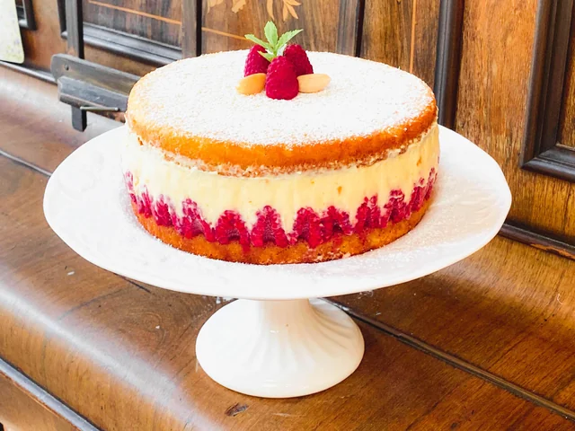
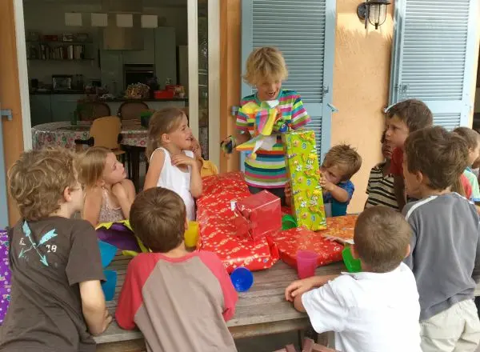

By Hudson Huckeba and Josiah Cooks (3rd period)
In France, birthdays are called “les anniversaires.” They are celebrations where friends and family gather to celebrate the birthday person with food, desserts, and gifts.
Many traditions are similar to birthdays in the United States, but French celebrations often focus more on spending time together and sharing a meal.
In France, birthdays are called “les anniversaires.” The word “anniversaire” literally means the anniversary of the day someone was born.
Birthdays are celebrated throughout France and in many other French-speaking countries such as Belgium, Switzerland, and parts of Canada. While the traditions are similar, each region may celebrate in slightly different ways depending on family customs.
A birthday is celebrated once each year on the date a person was born. Children often celebrate with a party and friends, while adults usually celebrate with family dinners or small gatherings.

Birthdays are an important tradition in French culture because they celebrate a person’s life and bring together friends and family. While some celebrations are small, they are meaningful moments where people share food, conversation, and appreciation for the birthday person.
“Joyeux anniversaire !”
This phrase means “Happy Birthday!” and is sung during the birthday celebration before the candles are blown out.

Birthdays in France are similar to birthdays in the United States. Both traditions include cake, candles, gifts, and singing a birthday song. However, French birthday celebrations are often smaller and more focused on sharing a meal with family and close friends instead of having very large parties.
In addition, French birthday desserts are often simpler and may include traditional pastries instead of large decorated cakes.
J’aime les anniversaires parce que c’est amusant.
Nous mangeons un gâteau et nous chantons “Joyeux anniversaire.”
Ma famille célèbre mon anniversaire avec un dîner spécial.
The following sources were used to research French birthday traditions and cultural customs.